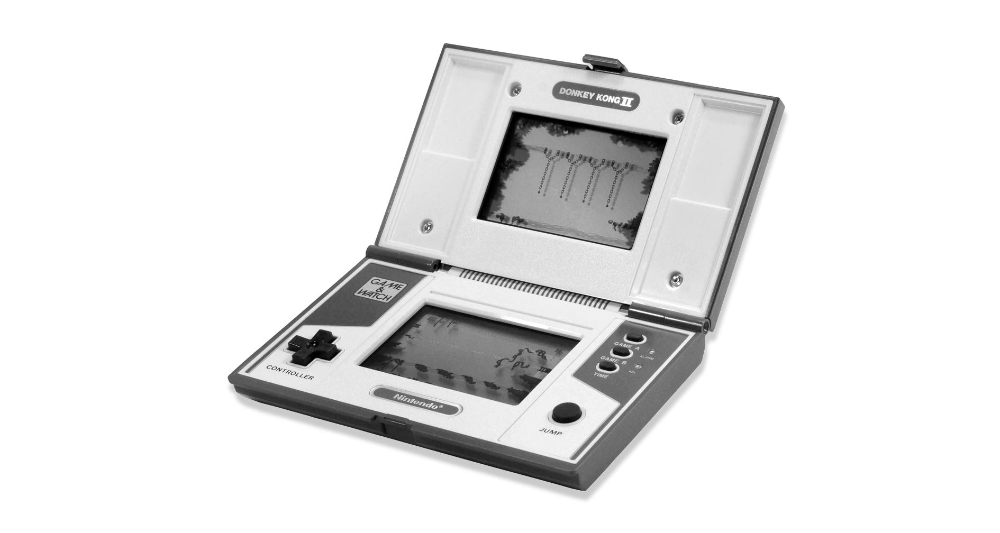
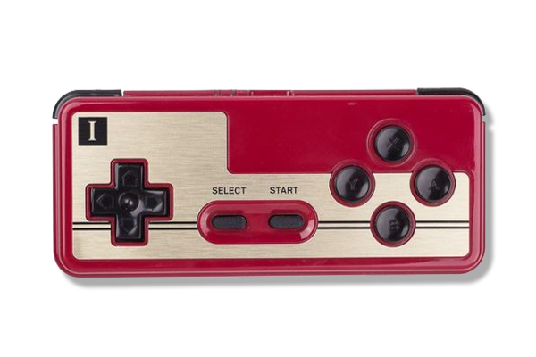
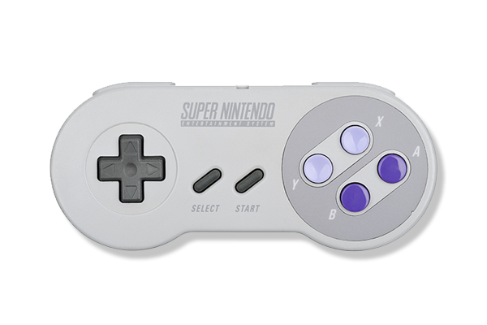
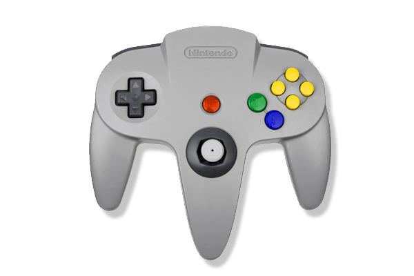
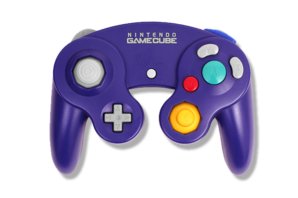
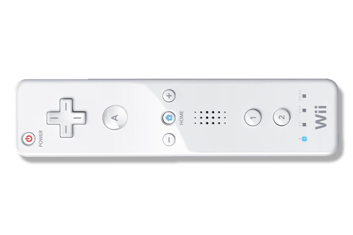

THE EVOLUTION OF
THE NINTENDO CONTROLLER
ABOUT THIS SITE
저는 닌텐도 게임기의 컨트롤러를 정말 좋아합니다.
그래서 이번 웹클라이언트컴퓨팅 첫 프로젝트로
닌텐도 컨트롤러의 역사를 한눈에 볼 수 있는 사이트를 만들어 봤습니다.

THE EVOLUTION OF
THE NINTENDO CONTROLLER
NINTENDO GAME CONTROLLER TIMELINE
1980년 Game&Watch : 십자키를 세상에 알리다
1980년 Game&watch의 십자키로 게임컨트롤러의 혁신을 시작한 닌텐도는 파워글러브, 듀얼스크린, 위모콘등 게임컨트롤러에 신선한 시도를 해왔습니다.
|  | 1837년 패밀리컴퓨터 | |
| 1990년 슈퍼 닌텐도 |  | |
|  | 1996년 닌텐도 64 | |
| 2001 게임큐브 |  | |
|  | 2008년 닌텐도 Wii |
이외의, 실험적인 닌텐도 컨트롤러들
(디테일 메뉴를 펴서 내용을 확인하세요.)
요코이 군페이 : NINTENDO CONTROLLER PHILOSOPHY
"우수한 기술이 우수한 게임을 탄생시키는 것은 아니다. 오히려 첨단 기술은 개발과 생산에 비용을 발생시켜 아이디어를 경직시킬뿐더러 고가의 게임이 되어버린다. 기존의 기술을 다른 방향으로 활용하면 전혀 새로운 것을 창조해 낼 수 있다."
-요코이 군페이-
MORE
- 더 많은 정보와 출처 -
관련 유튜브 동영상
출처
메인사진 - 닌텐도 공식홈페이지
게임&워치 이미지 - http://www.gamecash.fr/jeux-occasion-game-watch-u52.html
패미콤 컨트롤러 이미지 - http://www.nds-card.com/ProShow.asp?ProID=513
슈퍼닌텐도 컨트롤러 이미지 - http://www.deviantart.com/browse/all/?offset=96&view_mode=2&order=9&q=snes+controller
닌텐도 64컨트롤러 이미지 - http://picandocodigo.net/tag/nintendo-64/
게임큐브 컨트롤러 이미지 - 루리웹 닌텐도 게시판
위 컨트롤러 이미지 - 닌텐도 공식홈페이지
재퍼 이미지 - https://mynintendonews.com/
파워글러브 이미지 - http://www.kotaku.co.uk/2014/10/23/video-game-adverts-better-weirder
위핏 이미지 - 닌텐도 공식홈페이지
위 U 이미지 - 닌텐도 공식홈페이지
참고자료 - 한국어 위키백과, 나무위키
유튜브 - LEMMiNO, Gaming Historian
20121887 임경훈 / 웹클라이언트 컴퓨팅 프로젝트1 / HISTORY OF NINTENDO GAME CONTROLLER